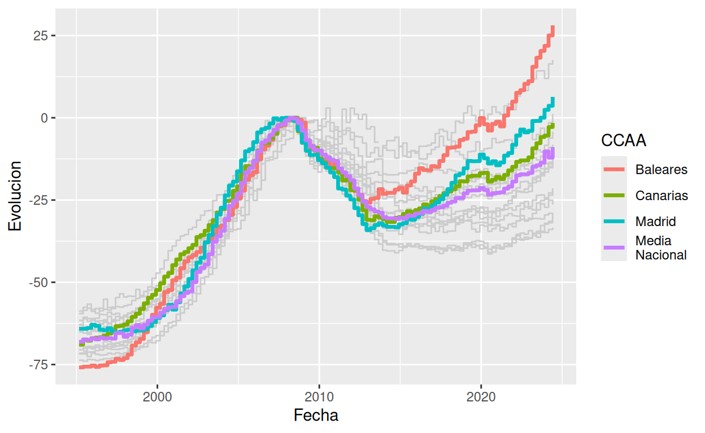
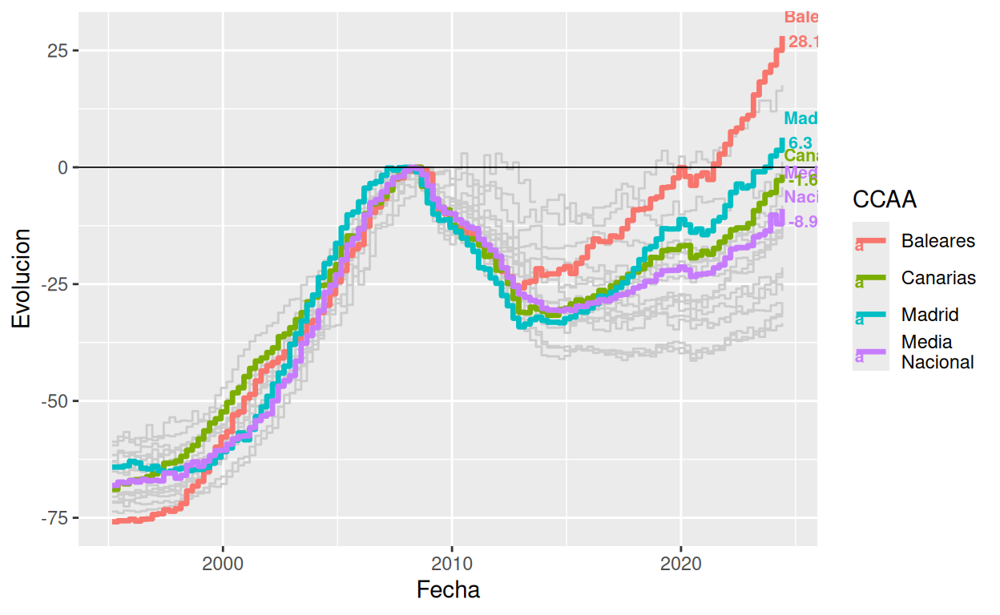
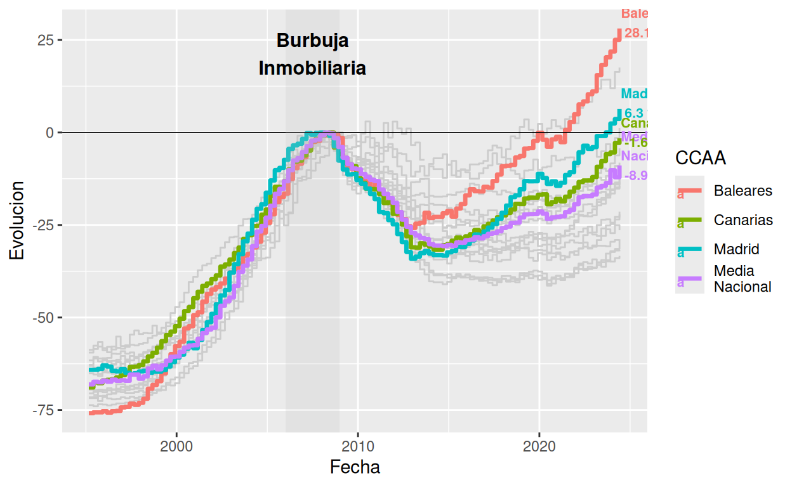
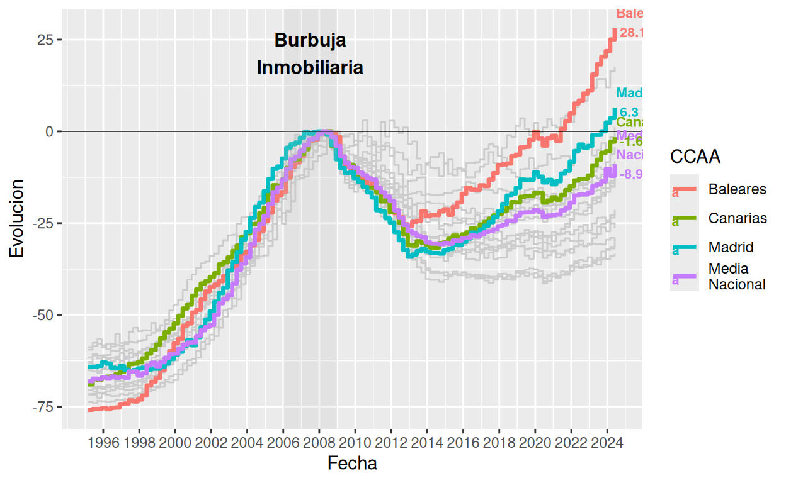
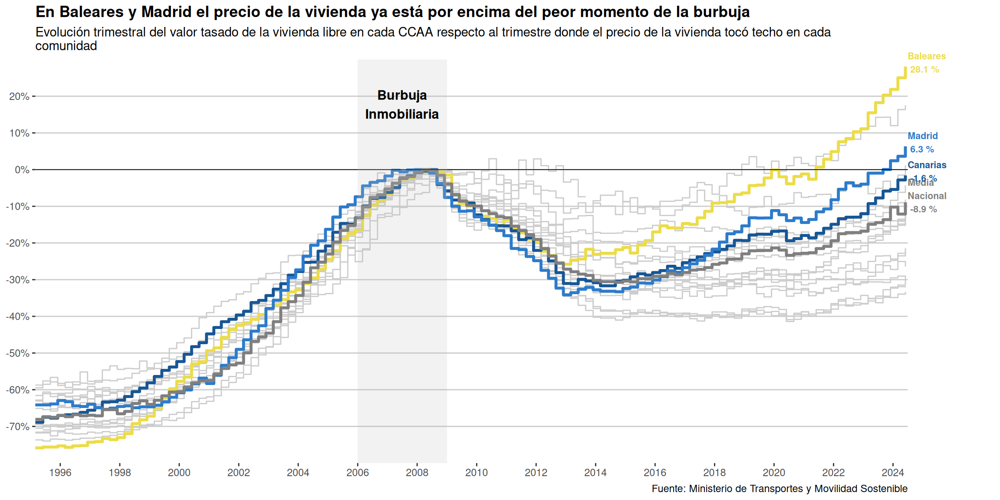
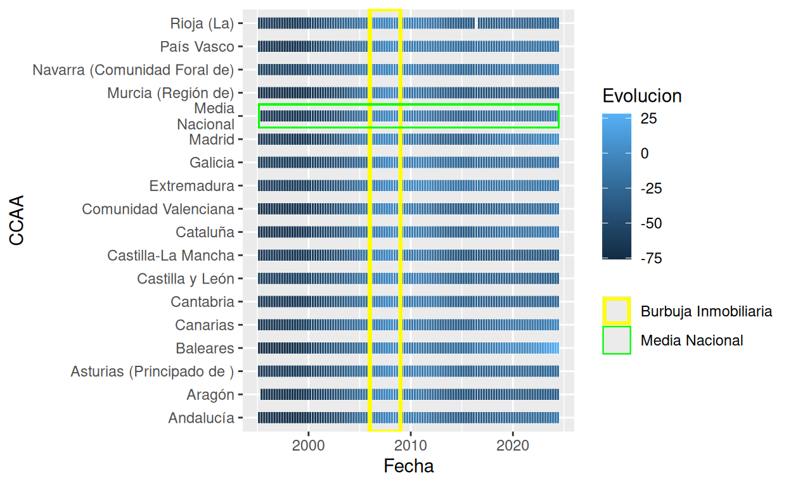
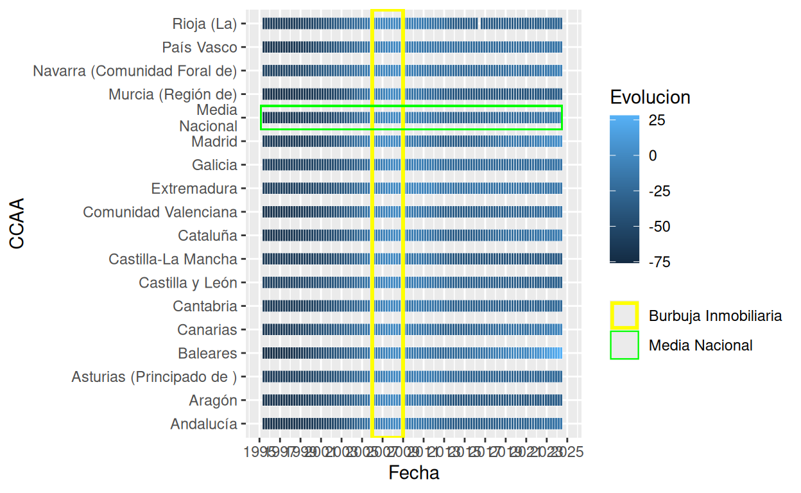
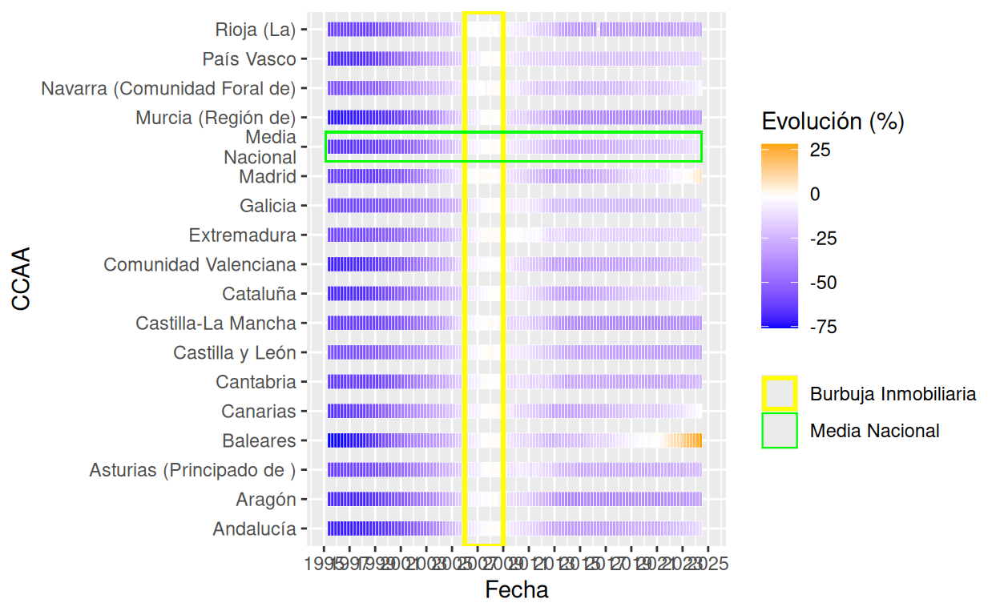
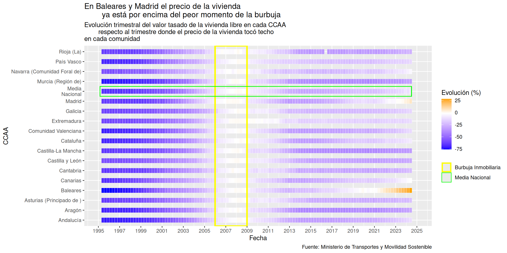
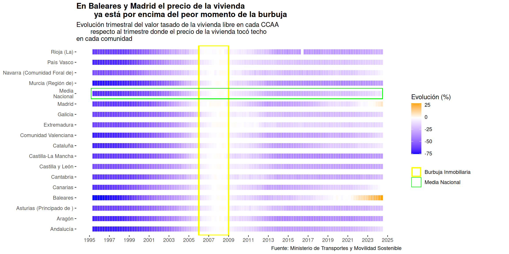

Visualization of the housing crisis in Spain according to official data from the Ministry of Transportation.
The original graph is derived from an article published by elDiario.es in October 2024, coinciding with a demonstration in Madrid addressing rising rental prices (“El aumento del precio del alquiler y la especulación avivan las protestas por el derecho a la vivienda”). The article examines various facets of the ongoing housing crisis such as the interplay between speculation and affordability.
The graph shows the Quarterly evolution of the appraised value of free housing per quarter in each Autonomous Community with respect to the quarter where the price of housing peaked in each community- In other words, the variation in the appraised price of housing with respect to the 2008 crisis. It highlights the values of three communities (Madrid, Baleares and Canarias), which are those with the fastest growth trends in recent months.
The data presented in the graph (appraised value of free housing) is publicly accessible online and is published quarterly by the Spanish Ministry of Transportation.
It can be easily downloaded here.
The first step is to load the necessary libraries for the replication.
Afterwards, the database needs to be loaded and the missing values coded as “NA”.
data <- read_excel("BBDD_DATAVIZ.xls")
data[data == "n.r"] <- NAOnce loaded, it is necessary to process the data to be able to work with it. First, the variable of the appraised value (“Valor Tasado”) was renamed to eliminate the blank space between words to be more easily manageable.
Then, the data was filtered to only consider the data of the major regions since it is also disaggregated by province. The filter is applied to the province column since the regional data has a missing value for this variable.
Once the data has been filtered, the highlighted regions were renamed to match the original graph’s labels (Baleares, Madrid and Media Nacional). And a vector was created to contain the names of the specific regions to be highlighted in the following steps.
Since the data is is provided in quarters, a new variable called “Fecha” (Date) has been created to easily represent the evolution of time. In this case, the variable has been coded to represent the last month of each quarter of the year.
Following the previous steps, it is needed to calculate the maximum value of the appraised value during the housing crisis. Therefore, the data is filtered before 2009 (according to the period highlighted in the original graph). The, it is grouped by region to get the maximum value for each one of them. After that, if the value is missing it is replaced by 0 and since this calculus has been made in a different data frame, the results are finally joined by region.
Finally, a variable is aggregated to be able to represent the evolution of housing prices according to the maximum value calculated before. This variable contains the porcentual change in housing prices for the maximum value in the crisis period. Moreover, it has been contemplated that if the maximum value is missing (equal to 0), the Evolution (Evolución) value is also 0.
Once the data is prepared, it is time to replicate the graph. The first step is to create a basic graph that includes the data to be represented and the axis variables. In this case, the x-axis represents the date (“Fecha”) and the y-axis the Evolution. The data is grouped by CCAA and the color to represent each line is determined by the CCAA they belong to.
To represent the lines, the command geom_step has been used since it represents the data according to the original graph (similar to a stairs/steps). Since there are two groups of CCAA, the first step has been to represent those that are not highlighted/labeled, which are represented in grey.
The second part is to include the highlighted regions, which are those contained in the vector of the previous steps and they are colored by region.
mi_grafico_mal <- mi_grafico_mal + geom_step(data = subset(
data_filtered, CCAA %in% comunidades_destacadas), aes(color = CCAA),
size = 1.2)
mi_grafico_mal 
Then, the marked line at the y-axis for value 0 is added in black.
mi_grafico_mal <- mi_grafico_mal + geom_hline(yintercept = 0,
linetype = "solid", linewidth = 0.3, color ="black")
mi_grafico_malAfterwards, custom text annotations are added by labeling specific regions (CCAA) from the filtered data at their most recent date (maximum date). Plus, their name and the rounded percentage change (Evolucion) are displayed at a specified position with styling adjustments.
mi_grafico_mal <- mi_grafico_mal + geom_text(
data = subset(data_filtered, CCAA %in% comunidades_destacadas) %>%
group_by(CCAA) %>%
filter(Fecha == max(Fecha, na.rm = TRUE)),
aes(x = as.Date("2024-06-30") - 1,
y = Evolucion,
label = paste(CCAA, "\n", round(Evolucion, 1), "%"),
color = CCAA),
hjust = 0, vjust = 0.3, size = 2.8, fontface = "bold")
mi_grafico_mal
To highlight the period of the economic crisis of 2008, a rectangle is created using annotate using the max and min values for the y-axis and the period between 2006 and 2008 for the x-axis.
However, this previous area contains the label “Burbuja Inmobiliaria” (Housing Bubble), which is also added using annotate to the estimated coordinates and style of the original graph.
mi_grafico_mal <- mi_grafico_mal + annotate("text",
x = as.Date("2007-07-01"), y = 10, label = "Burbuja\nInmobiliaria",
color = "black", size = 4, fontface = "bold", hjust = 0.5, vjust = -0.5)
mi_grafico_mal
Now that all necessary data representation is prepared, the final steps are related to the theme and adjustments to accurately represent the original graph.
First, the x-axis is adjusted using the scale_x_date command to represent the date variable only for even years. To do so, the limit of the axis is set to the final month of available data (June of 2024, at the time of consultation) and then the breaks are set so that the year represented is divisible by 2 (to ensure even numbers).
mi_grafico_mal <- mi_grafico_mal + scale_x_date(
limits = c(min(data_filtered$Fecha, na.rm = TRUE), as.Date("2024-06-30")),
breaks = seq(
from = as.Date(paste0(ifelse(year(min(
data_filtered$Fecha, na.rm = TRUE)) %% 2 == 0,
year(min(data_filtered$Fecha, na.rm = TRUE)),
year(min(data_filtered$Fecha, na.rm = TRUE)) + 1), "-01-01")),
to = as.Date("2024-01-01"),
by = "2 years"),
date_labels = "%Y")
mi_grafico_mal 
Second, the y-axis is also adjusted so that values are represented by 10% and despite showing values for up to 30% and down to -80%, not show these limit labels.
Afterwards, the original colors of the highlighted regions are manually coded.
mi_grafico_mal <- mi_grafico_mal + scale_color_manual(values = c(
"Media Nacional" = "#5E5E5E", "Baleares" = "#ECDC49",
"Madrid" = "#2C7BCB", "Canarias" = "#175695", "Otros" = "#D9D9D9"))
mi_grafico_malThen, the title, subtitle and caption are introduced using labs.
mi_grafico_mal <- mi_grafico_mal +
labs(
title = "En Baleares y Madrid el precio de la vivienda ya está por encima del peor momento de la burbuja",
subtitle = "Evolución trimestral del valor tasado de la vivienda libre en cada CCAA respecto al trimestre donde el precio de la vivienda tocó techo en cada\ncomunidad",
caption = "Fuente: Ministerio de Transportes y Movilidad Sostenible"
)
mi_grafico_malFinally, the theme is established to accurately replicate the graph. Here is necessary to eliminate the legend, both axis labels and the grid lines of the x-axis. Regarding the y-axis, the grid lines are styled according to the original in grey.
mi_grafico_mal <- mi_grafico_mal + theme(
legend.position = "none",
axis.title.y = element_blank(),
axis.title.x = element_blank(),
panel.grid.major.x = element_blank(),
panel.grid.major.y = element_line(color = "grey80", size = 0.5),
panel.grid.minor = element_blank(),
plot.margin = margin(5, 80, 5, 5),
plot.title = element_text(face = "bold"),
panel.background = element_rect(fill = "white", color = NA)
)
mi_grafico_malFinally, coord_cartesian is employed to eliminate the limits that do not allow to see the highlighted regions’ labels (concretely, the key command is clip = “off”).
mi_grafico_mal <- mi_grafico_mal + coord_cartesian(xlim =
c(as.Date("1995-03-01"),
as.Date("2024-06-30")), clip = "off", expand = 0)
mi_grafico_mal
However, this final graph has an issue since Ceuta and Melilla are not represented in the original graph. Therefore, the data is filtered to eliminate this two regions and then the code is executed altogether to represent the graph correctly.
data_limited <- subset(data_filtered, CCAA != "Ceuta" & CCAA != "Melilla")
mi_grafico <- ggplot(data_limited,
aes(x = Fecha, y = Evolucion, group = CCAA, color = CCAA)) +
geom_step(data = subset(data_limited, !CCAA %in% comunidades_destacadas),
color = "grey80") +
geom_step(data = subset(data_limited, CCAA %in% comunidades_destacadas),
aes(color = CCAA), size = 1.2) +
geom_hline(yintercept = 0, linetype = "solid", linewidth = 0.3,
color ="black") +
geom_text(
data = subset(data_filtered, CCAA %in% comunidades_destacadas) %>%
group_by(CCAA) %>%
filter(Fecha == max(Fecha, na.rm = TRUE)),
aes(x = as.Date("2024-06-30") - 1,
y = Evolucion,
label = paste(CCAA, "\n", round(Evolucion, 1), "%"),
color = CCAA),
hjust = 0, vjust = 0.3, size = 2.8, fontface = "bold") +
annotate("rect", xmin = as.Date("2006-01-01"), xmax = as.Date("2008-12-31"),
ymin = -Inf, ymax = Inf,
fill = "grey", alpha = 0.2) + # Rectángulo gris
annotate("text", x = as.Date("2007-07-01"), y = 10,
label = "Burbuja\nInmobiliaria",
color = "black", size = 3.5, fontface = "bold", hjust = 0.5,
vjust = -0.5) +
scale_x_date(
limits = c(min(data_filtered$Fecha, na.rm = TRUE), as.Date("2024-06-30")),
breaks = seq(
from = as.Date(paste0(ifelse(year(min(
data_filtered$Fecha, na.rm = TRUE)) %% 2 == 0,
year(min(data_filtered$Fecha, na.rm = TRUE)),
year(min(data_filtered$Fecha, na.rm = TRUE)) + 1), "-01-01")),
to = as.Date("2024-01-01"),
by = "2 years"),
date_labels = "%Y") +
scale_y_continuous(
limits = c(-80, 30),
breaks = seq(-70, 20, by = 10),
labels = function(y) ifelse(y == -80, "", paste0(y, "%")),
expand = expansion(mult = c(0, 0.05))) +
scale_color_manual(values = c("Media Nacional" = "#5E5E5E",
"Baleares" = "#ECDC49",
"Madrid" = "#2C7BCB", "Canarias" = "#175695",
"Otros" = "#D9D9D9")) +
labs(title =
"En Baleares y Madrid el precio de la vivienda ya está por encima del peor momento de la burbuja",
subtitle =
"Evolución trimestral del valor tasado de la vivienda libre en cada CCAA respecto al
trimestre donde el precio de la vivienda tocó techo en cada\ncomunidad",
caption = "Fuente: Ministerio de Transportes y Movilidad Sostenible") +
theme(
legend.position = "none",
axis.title.y = element_blank(),
axis.title.x = element_blank(),
panel.grid.major.x = element_blank(),
panel.grid.major.y = element_line(color = "grey80", size = 0.5),
panel.grid.minor = element_blank(),
plot.margin = margin(5, 60, 5, 5),
plot.title = element_text(face = "bold"),
panel.background = element_rect(fill = "white")) +
coord_cartesian(xlim = c(as.Date("1995-03-01"), as.Date("2024-06-30")),
clip = "off", expand = 0)
mi_graficoIn addition, ggplotly has been used to make the plot interactive, which enables to see the price value, the quarter, the year and the corresponding region when the cursor is moved across the plot.
y <- ggplot(data_limited,
aes(x = Fecha, y = Evolucion, group = CCAA, color = CCAA,
text = paste("CCAA:", CCAA, "<br>Año:", format(Fecha, "%Y"),
"<br>Trimestre:",
Trimestre, "<br>Evolución:",
round(Evolucion, 2), "%"))) +
geom_step(data = subset(data_limited, !CCAA %in% comunidades_destacadas),
color = "grey80") + # Comunidades en gris claro
geom_step(data = subset(data_limited, CCAA %in% comunidades_destacadas),
size = 1.2) + # Comunidades destacadas
geom_hline(yintercept = 0, linetype = "solid", linewidth = 0.1, color = "black") +
geom_text(
data = subset(data_filtered, CCAA %in% comunidades_destacadas) %>%
group_by(CCAA) %>%
filter(Fecha == max(Fecha, na.rm = TRUE)),
aes(x = as.Date("2024-06-30") + 60,
y = Evolucion,
label = paste(CCAA, "\n", round(Evolucion, 1), "%"),
color = CCAA),
hjust = 0, vjust = 0.3, size = 2.8, fontface = "bold")+
annotate("rect", xmin = as.Date("2006-01-01"), xmax = as.Date("2008-12-31"),
ymin = -Inf, ymax = Inf,
fill = "grey", alpha = 0.2) +
annotate("text", x = as.Date("2007-07-01"), y = 10,
label = "Burbuja\nInmobiliaria",
color = "black", size = 3, fontface = "bold", hjust = 0.5,
vjust = -0.5) +
scale_x_date(
limits = c(min(data_limited$Fecha, na.rm = TRUE), as.Date("2024-12-31")),
date_breaks = "2 years",
date_labels = "%Y"
) +
scale_y_continuous(
limits = c(-80, 30),
breaks = seq(-70, 20, by = 10),
labels = function(y) ifelse(y == -80, "", paste0(y, "%")),
expand = expansion(mult = c(0, 0.05))
) +
scale_color_manual(values = c("Media Nacional" = "#5E5E5E",
"Baleares" = "#ECDC49",
"Madrid" = "#2C7BCB", "Canarias" = "#175695",
"Otros" = "#D9D9D9")) +
labs(
title = "Evolución del precio de la vivienda libre en cada CCAA:
Comparación trimestral respecto al valor máximo antes de la burbuja",
caption = "Fuente: Ministerio de Transportes y Movilidad Sostenible"
) +
theme(
legend.position = "none",
axis.title.y = element_blank(),
axis.title.x = element_blank(),
panel.grid.major.x = element_blank(),
panel.grid.major.y = element_line(color = "grey80", size = 0.5),
panel.grid.minor = element_blank(),
plot.margin = margin(5, 60, 5, 5),
panel.background = element_rect(fill = "white")
)
interactive_plot <- ggplotly(y, tooltip = "text")
interactive_plotHowever, this function has trade-offs. In this sense, in order to make the chart dynamic, the final labels of the highlighted regions are not represented and it is not possible to include the box displaying the period of the crisis.
The original graph from elDiario.es is a good approach to represent the evolution of housing prices in relation to the economic crisis of 2008. Nonetheless, there are some issues that could be improved. For example, the user is not able to see the values for all the regions since only the highlighted ones are easy to identify (which are the ones where prices have been recently growing faster).
Consequently, two alternatives are proposed to improve the representation of the data.
The first improvement option consists of transforming the graph into a tile graph. First, the date variable (Fecha) is ensured to be established as a date. Then, the base graph is created where date, region and evolution are represented in tiles.
Afterwards, the highlighted crisis period is represented by a yellow rectangle so it can be easily identified. Plus, the national average is also highlighted in green.
tile <- tile +
geom_rect(aes(xmin = as.Date("2006-01-01"),
xmax = as.Date("2008-12-31"),
ymin = -Inf, ymax = Inf, color = "Burbuja Inmobiliaria"),
fill = NA, linewidth = 1) +
geom_rect(aes(xmin = as.Date("1995-03-01"),
xmax = as.Date("2024-06-30"),
ymin = which(levels(factor(
data_limited$CCAA)) == "Media\nNacional") - 0.5,
ymax = which(levels(factor(
data_limited$CCAA)) == "Media\nNacional") + 0.5,
color = "Media Nacional"),
fill = NA, linewidth = 0.4) +
scale_color_manual(
name = NULL,
values = c("Burbuja Inmobiliaria" = "yellow", "Media Nacional" = "green")
)
tile
Then, the x-axis is set to represent the date every 2 years (like the original graph).
tile <- tile +
scale_x_date(
limits = c(min(data_limited$Fecha, na.rm = TRUE), as.Date("2024-12-01")),
date_breaks = "2 years",
date_labels = "%Y")
tile
For this graph, it is important to determine the colors of the gradient for an easier visualization. Consequently, the gradient has been coded so that values around 0% are white, the values above are orange and the inferior values are blue.
tile <- tile + scale_fill_gradientn(
colours = c("blue", "white", "orange"),
values = rescale(c(-75, 0, 30)),
name = "Evolución (%)")
tile
The final steps include determining the title, subtitle and caption according to the original graph.
tile <- tile +
labs(
title = "En Baleares y Madrid el precio de la vivienda
ya está por encima del peor momento de la burbuja",
subtitle = "Evolución trimestral del valor tasado de la vivienda libre en cada CCAA
respecto al trimestre donde el precio de la vivienda tocó techo\nen cada comunidad",
caption = "Fuente: Ministerio de Transportes y Movilidad Sostenible")
tile
And finally, establish the theme of the plot: white background, eliminating the axis labels and the margins of the plot.
tile <- tile +
theme(
legend.position = "right",
axis.title.y = element_blank(),
axis.title.x = element_blank(),
panel.grid.major.x = element_blank(),
panel.grid.major.y = element_blank(),
panel.grid.minor = element_blank(),
plot.margin = margin(5, 60, 5, 5),
plot.title = element_text(face = "bold"),
panel.background = element_rect(fill = "white"))
tile
The second option consists of an interactive bubble graph inspired by gapminder. The aim is to represent the evolution of the appraised value of housing in relation with the average wages and the population of each region throughout the years.
The first step is to introduce the new data that is needed. Both, the average wages and the population size are available at INE’s webpage.
Regarding the average wages per region, the data is available from 2008 to 2023 in this database since it is divided into different datasets depending on which year is taken as the baseline to calculate the monetary value.
And regarding the population per region, the data is available from 1996 to 2021 (excluding 1997 in this period) for all Autonomous Communities and including the national average.
renta_CCAA <- read_excel("RENTA PER CAPITA CCAA.xlsx")
POP <- read_excel("POP.xlsx")However, the data is not in a tidy format and it needs to be arranged accordingly to be able to join all databases.
renta_CCAA <- renta_CCAA %>%
rename(CCAA = Año) %>%
pivot_longer(cols = 2:17, names_to = "Año", values_to = "renta_media")
POP <- POP %>%
pivot_longer(cols = 2:27, names_to = "Año", values_to = "population")
merged_data <- renta_CCAA %>%
left_join(POP, by = c("CCAA", "Año"))
merged_data <- merged_data %>%
mutate(CCAA = case_when(
CCAA == "Balears, Illes" ~ "Baleares",
CCAA == "Madrid, Comunidad de" ~ "Madrid",
CCAA == "Media Nacional" ~ "Media\nNacional",
CCAA == "Asturias, Principado de" ~ "Asturias (Principado de )",
CCAA == "Castilla - La Mancha" ~ "Castilla-La Mancha",
CCAA == "Comunitat Valenciana" ~ "Comunidad Valenciana",
CCAA == "Navarra, Comunidad Foral de" ~ "Navarra (Comunidad Foral de)",
CCAA == "Rioja, La" ~ "Rioja (La)",
TRUE ~ CCAA
))Once the new data has been prepared, the original database has to be filtered again since wages and population are not aggregated by quarter. Therefore, the filter is going to be applied so that the year prices are the ones corresponding to the end of each year (fourth quarter). Plus, it ensure that the year is coded as a numeric variable to join the datasets.
data_filtered_filtered <- data_filtered %>%
filter(Trimestre == 4)
merged_data <- merged_data %>%
mutate(Año = as.numeric(Año))
combined_data <- merged_data %>%
left_join(data_filtered_filtered, by = c("CCAA", "Año"))
filtered_data <- combined_data %>%
filter(!Año %in% c(2022, 2023)) %>%
filter(!CCAA == "Media\nNacional")The last part of the code filters the combined dataset to exclude rows the years 2022 and 2023 since population and wages data is not included for those years. Additionally, the national average value is also excluded because it disproportionately included data from all the Autonomous Communities and it made visual representation unbalanced.
The second step of the second alternative is to set the ranges for the x-axis and y-axis. Here, it takes the minimum and maximum values of wages and appraised value respectively, ignoring any missing values. Each range is then scaled to expand the upper and lower bounds) to ensure the plot includes some extra space around the data points for better visualization.
In order to visualize the evolution of salaries (renta_media) and housing prices (Valor_Tasado) across regions (CCAA) over time, the code below uses plotly to build an animated bubble plot. Each bubble represents a territory; the color of the bubble indicates the region (CCAA), and the size of the bubble is proportional to the population. The animation moves through frames corresponding to different years. Details such as the year, region, average salary, and house price are displayed when you click over a bubble.
animated_plot <- plot_ly(data = filtered_data,
x = ~Valor_Tasado,
y = ~renta_media,
size = ~population,
color = ~CCAA,
frame = ~Año,
text = ~paste("Año: ", Año,
"<br>CCAA: ", CCAA,
"<br>Renta Media: ", renta_media,
"<br>Valor Tasado: ", Valor_Tasado),
hoverinfo = "text",
marker = list(sizemode = 'diameter', opacity = 0.6,
line = list(width = 0))) %>%
layout(title = "Evolution of housing prices and wages per region",
xaxis = list(title = "Valor Tasado de la Vivienda", range = y_range),
yaxis = list(title = "Renta Media", range = x_range),
showlegend = TRUE,
hovermode = "closest") %>%
animation_opts(frame = 300, transition = 0, easing = "linear", redraw = FALSE)
animated_plotThe alternative versions of the original graph offer insights that may not have been easily considered in the article in the article published by the online newspaper. For instance, these versions make it easier to distinguish differences between regions. In the tile graph, those that are currently experiencing worse conditions than during the 2008 financial crisis (*highlighted in orange**) clearly stand out from those that have yet to reach their crisis-era price levels. Moreover, the visualization enhances clarity by making it easier to identify individual regions.
Additionally, the interactive version of the bubble plot provides a dynamic perspective on housing trends in relation to wages, since they do not follow a parallel trajectory. This approach is key to understanding the magnitude of the housing problem and regional disparities in housing affordability.
In conclusion, these alternative visualizations not only provide a clearer understanding of regional disparities but also underscore the complexity of the housing crisis.